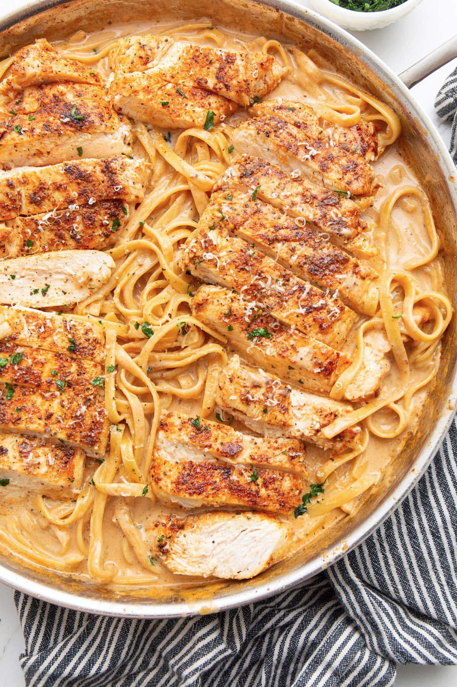

Cajun Chicken Pasta

Description
This creamy pasta is sure to wow the crowd. Tender cajun chicken in a creamy savory sauce with tomatos.
16oz linguine pasta
3-4 chicken breasts
4 tsp olive oil
4 tbsp unsalted butter
3 tbsp cajun seasoning, divided
6 garlic cloves, minced
1 1/2 cup diced tomatoes
3 cup heavy cream or vegan heavy cream
1 cup grated parmesan cheese
1/4 cup parsley, chopped finely for garnish
Steps
Bring large pot of water to a boil, salt to taste, bit of oil to prevent sticking. Cook pasta al dente according to package instructions. Reserve 1 cup of pasta water. Drain and cover to keep warm.
Beat chicken breasts to roughly equal thickness, and season with 2 tbsp cajun seasoning.
Heat 4 tsp olive oil in large non-stick pan. Sear chicken over medium-high heat then lower to low-medium and cook until internal temp reaches 165 degrees. Transfer to cutting board, slice and cover to keep warm and moist.
Melt butter on medium-low skillet and cook garlic until fragrant, about 1 minute. Add diced tomatoes and saute 1-2min.
Add heavy cream, then parmesan cheese and rest of cajun seasoning to taste. Simmer and mix often until cheese is melted.
Add all incredients in large pot and toss until well combined. Add pasta water to thin sauce if desired. Serve with freshly grated parmesan and chopped parsley.